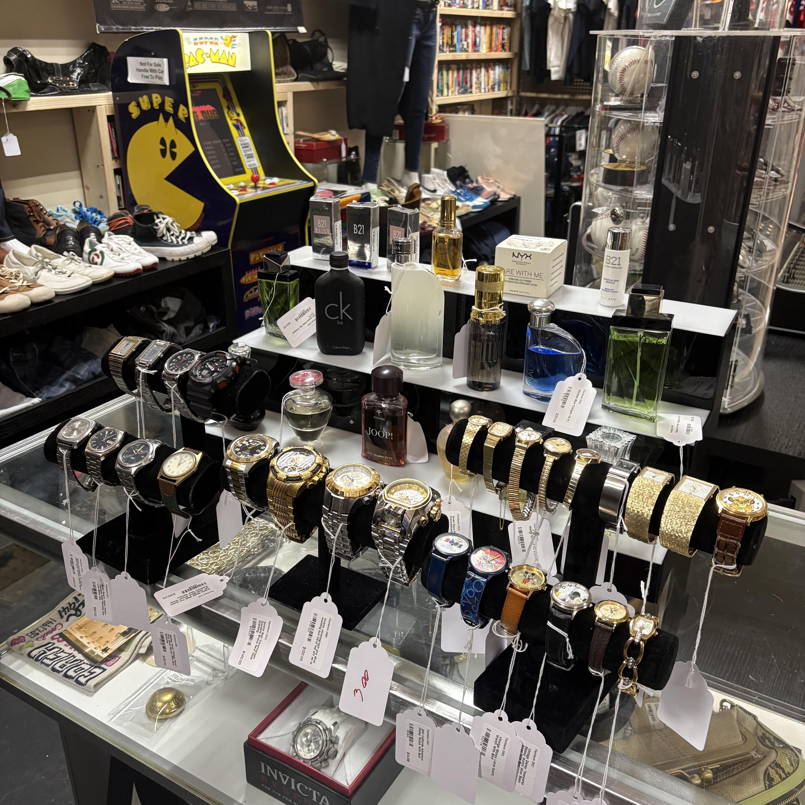

Games, Blu-ray, DVD, boxed sets, and shelves of case art.

Vero Flashback Booth
The Shop
New Items Weekly.

Classic tapes, cult titles, posters, and movie shelf finds.
Jackets, dress shirts, jerseys, tees, hats, and sportswear.
Consoles, receivers, cameras, and display-ready gadgets.
Figures, odd finds, arcade pieces, and novelty items.
New pieces rotate in, so the booth changes often.
Shop Photos
A quick look at the main areas: the media shelves, VHS wall, clothing racks, arcade corner, and small display pieces.

Game & Movie Shelves
Rows of PS4, Xbox 360, PS2, Wii, and GameCube-era games, from Halo to Final Fantasy, above shelves packed with Blu-rays, DVDs, and box sets.

VHS Wall
Hundreds of tapes spanning John Wayne westerns, war classics, 90s hits like Independence Day and Ghost, plus Bruce Lee and cult horror finds.

Hats & Jerseys
A wall of ball caps, including Yankees, Mets, Cubs, and Flyers, hanging over racks of hockey, baseball, and football jerseys, satin jackets, and tees.

Jackets & Dress Shirts
Leather jackets, windbreakers, plaid and Hawaiian button-ups, and beaded vintage tops hanging beneath original X-Men movie posters.

Styled Designer
A mannequin styled in a Gucci bucket hat, Dior bomber, and Harley-Davidson skull tee, flanked by vintage leather handbags.

Arcade Corner
A free-to-play Super Pac-Man arcade cabinet loaded with Dig Dug, parked under a Texas Chainsaw Massacre theater banner beside the CD shelves.

Odd Finds
A 25-cent Dubble Bubble triple gumball machine stocked and working, with board games, plush finds, and a slot machine tucked nearby.

Vintage Watches
A display case of Timex, Invicta, and vintage models, beside shelves of collectible colognes.